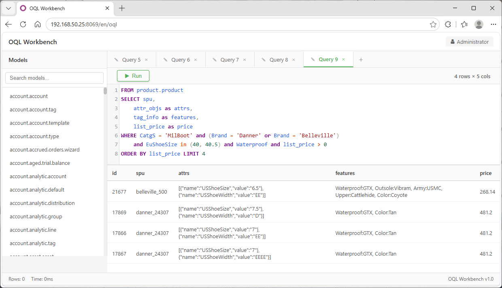

Query Odoo ORM models with intuitive, business-focused syntax. Write what you mean — not how to find it.
Business Queries · Domain Simplification · Natural Language

# Step 1: Find categories (2 searches)
boot_catg = env['product.category'].search([
('name', '=', 'Boot'), ('level', '=', 'CatgS')
])
danner_brand = env['product.category'].search([
('name', '=', 'Danner'), ('parent_id', 'child_of', boot_catg.ids)
])
# Step 2: Find attributes (1 search)
size_values = env['product.attribute.value'].search([
('attribute_id.name', 'like', 'EU Shoe Size'), ('name', 'in', ['40', '40.5'])
])
# Step 3: Find tags (1 search)
waterproof_tags = env['product.template.tag'].search([
('name', 'like', 'Waterproof')
])
# Step 4: Execute
products = env['product.product'].search([
('categ_id', 'child_of', danner_brand.ids),
('product_template_attribute_value_ids.product_attribute_value_id', 'in', size_values.ids),
('tag_ids', 'in', waterproof_tags.ids)
])
products = env['product.product'].searcho(
"CatgS = 'Boot' and Brand = 'Danner'
and EuShoeSize in ('40', '40.5')
and Waterproof"
)
Business-focused — uses terms like "Waterproof"
Readable — reads like natural language
Maintainable — one line, easy to change
Accessible — business users can write queries
Use words like "Waterproof" instead of field paths. Define terms via UI with domain rules or Many2many references to records.
Replace product_tmpl_id.default_code with spu. Three modes: Field path, JMESPath expression, Jinja2 template.
FROM SELECT WHERE ORDER BY LIMIT OFFSET — familiar structure with AS aliases and * wildcard support.
Separate OQL ACL layer: control read/write access per field and per alias per user group. Independent of standard Odoo ACL.
Enable shorthand on aliases — OQL auto-matches value types to find the correct field path without explicit naming.
Install the free oql_web addon for interactive query building with syntax highlighting and autocomplete.
Map business words to record sets. Two resolution strategies:
# Bare term — existence check env['product.product'].searcho("Waterproof") # Term with value — custom __oql_bin__ env['product.product'].searcho("EuShoeSize = '40'")
Configure at Settings > Technical > OQL > Terms
Shorten long field paths. Three modes plus shorthand:
partner_id.name → partner_namerec contextConfigure at Settings > Technical > OQL > Aliases
| Category | Operators | Example |
|---|---|---|
| Comparison | =, !=, <>, >, >=, <, <= |
price > 100 |
| Pattern | like, ilike, not like, not ilike, =like, =ilike |
name like 'Boot' |
| Set | in, not in |
Size in ('40', '40.5') |
| Hierarchy | child_of, parent_of |
categ_id child_of parent |
| Null | is null, is not null |
partner_id is null |
| Unset | =? |
partner_id =? partner_id |
| Existence | bare field/term | tag_ids |
# searcho() — returns RecordSet # Accepts WHERE clause only env['product.product'].searcho( "Waterproof and Size = '40'" ) # oql() — returns List[dict] # Full SQL-like syntax env['product.product'].oql( "from product.product select translate name, list_price, partner_id.name where translate active = true and name = 'Chaussures'" order by list_price desc limit 10 offset 20" )
Place the oql module in your addons path, then install it from the Odoo Apps menu.
Create Terms (e.g., "Waterproof") and Aliases at Settings > Technical > OQL.
Use searcho() for simple searches (returns records), or oql() for full queries with SELECT/ORDER BY/LIMIT/OFFSET (returns List[dict]).
That's it! Start writing business-focused queries your team can understand.
Install OQL and write queries that reflect what you actually mean.
View on GitHub